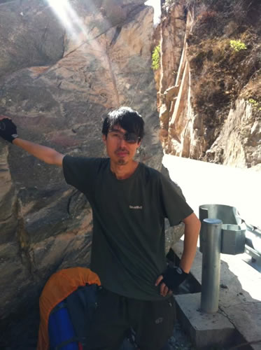

小贾同志发来一份问卷调查，俺抽时间填了一下，放到这儿来吧：
1.你为什么去西藏？
机缘巧合。俺的手机店倒闭之后，便计划远行，随便去哪儿，反正越远越好。预算不多，只能搭绿皮火车四处游荡，于是在某宝拍了一个小背包和旅游鞋。
这时，很偶然逛到了徒步贴吧，才知道世上还有徒步旅行这么一回事。经过几天钻研，挑选了敦煌和西藏这两条路线，接下来就是不断滴发帖回帖。结果敦煌路线太冷门，完全找不到队伍。而川藏线就显得热闹多了，各种求组队。最后俺顺利滴组到了老云、老妖、小肖、果冻、小朱，西藏之行就这么开始咯。
总之，在此之前俺对徒步和西藏一无所知，就这样。
2.你为什么选择徒步？
因为自行车太贵，更重要的是，自行车太快！做为一个老光棍，最不缺的就是时间。
3.是什么支撑着你前行？西藏之行最大的收获是什么？
逃离傻逼的生活，就是支撑我前行的最大信念。快走到拉萨的时候，很多人都问我有什么感触，我知道大家想要的答案是：终于解脱了！终于要结束这趟痛苦的旅行了。其实相反，每走近拉萨一步，俺的心里就越是失落。真想就那样一直一直走下去，永不回头。
最大的收获，是切身体会到信仰的力量。林芝地区一路走来的所见所闻，相信小贾和我一样感触良多。那里正在建设高速公路，内地的物资将更快捷滴运送到林芝，内地的思想和生活方式也将更迅速地入侵西藏。这儿不谈利与弊，真心希望西藏能坚守自己的信仰和纯真。好吧，离题啦~
4.去西藏前后你最大的改变是什么？认知观、价值观？
刚回到自己的城市有一种很陌生的感觉，如同当初刚到藏区。改变是潜移默化的，硬说要有改变的话，就是觉得自己比以往更坚毅了，总之是好事。俺以前的人生观是：活着就是等死，至少现在不会想得那么极端了。
三观肯定会有所变化的，特别是和菊仙、小叶、疯子这些神经病在一起，多少会受不良影响的，哈哈。然后，如上面所说的，藏民对信仰的虔诚和纯粹挺让俺震精的。
5.现在回想，西藏之行什么最我记忆深刻？
藏民的纯朴。如今，纯朴已经是像钻石般珍贵而稀有的东西。
6.你的兴趣爱好是什么？
一个人独处，种花，听歌，看电影。
7.你有自己的理想、目标吗？是什么？
希望老的时候，能够回到乡下，耕耘几分菜地，种花养鸡，远离尘嚣，寿终正寝，便是俺最后的愿望。
8.对新人去西藏有什么建议或想说的？
俺和小贾经过某些村庄借宿时，遭到了每个藏民的拒绝，有些甚至远远看见我们俩就躲起来。后来有藏民说，当地村民曾热情接待背包客在家过夜，结果被偷走一些珍贵的银器厨具。可想而知，这让善良的藏民十分伤心，因此对我们这些旅行的人产生不信任感，是很正常的事情。
另外藏区的小孩们组队拦车“抢劫”的事，我们也是亲眼目睹，这种事之所以发生的原因说起来很复杂。以上都是鱼龙混杂的旅行人群，给西藏人民带来的不良影响。建议和想说的，大家都自己想吧。。。
9.对当下的旅行热你怎么看？你怎么定义旅游和旅行？
对于这两个字眼的争论，网络上到处都有说法。就我所看到的，有一类自觉得逼格很高的文艺青年，相当鄙视“旅游”。又有一些拖着个大行李箱，一步都懒得挪的搭车党，挂着“旅行”的名号，四处骗吃骗喝。俺说这些话可能挺得罪人，总之，只要与人为善，爱护环境，旅游和旅行都是一回事，都是在家呆腻了想出门看看呗。
硬要做个区分，个人的理解是旅游时间短，花钱买服务，开支稍大。参加旅游团的话，固定看那几个象征性的风景，确实没啥意思的，不过只要自己玩得高兴就好了。旅行呢，就是自由自在地游玩了，舒适程度视钱包而定。
10.下一次选择长途旅行，你想去哪？
和老妖一样，新疆。
附问：可以做一个简单的自我介绍吗？
（另附个人照片一张，最好旅行照片）
吴尼玛，老光棍。

2016.4.3 |